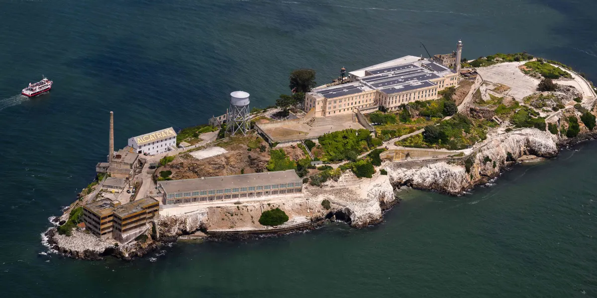

- Nom : Alcatraz Island
- Localisation : baie de San Francisco, Californie, États-Unis
- Type de lieu : île touristique et ancienne prison
- Pourquoi c'est connu : son ancienne prison de haute sécurité
- Pourquoi visiter : découvrir son histoire et profiter d'une belle vue sur San Francisco
Pourquoi Alcatraz est-elle connue ?
L'île d'Alcatraz est surtout connue pour son ancienne prison fédérale de haute sécurité, qui a accueilli des criminels célèbres comme Al Capone.
Elle est également connue pour :
Ses évasions
En 1962, trois prisonniers ont disparu sans jamais être retrouvés.
Sa sécurité
Elle était considérée comme une prison dont il était presque impossible de s'échapper.
Son histoire
La prison a fermé en 1963 et l'île est aujourd'hui un lieu touristique.
Son emplacement
Elle est entourée par les eaux froides de la baie de San Francisco.
Prêt à découvrir l'île ?
Plongez dans plus de 150 ans d'histoire, entre fort militaire, prison fédérale et parc national.
Découvrir son histoire